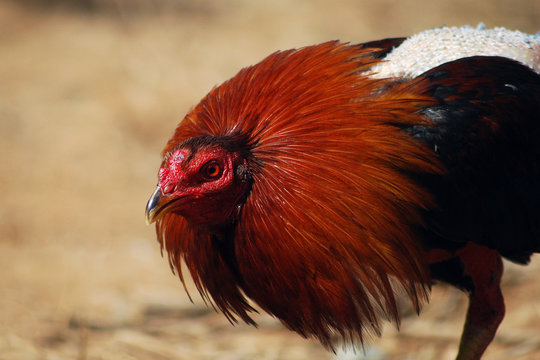
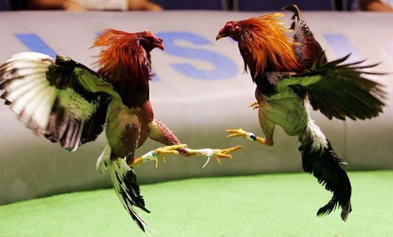
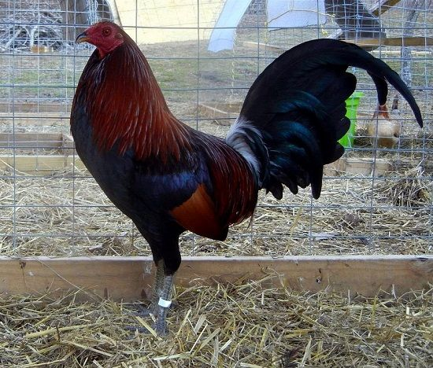

Historia de los Gallos de Pelea
Los gallos de pelea tienen una historia milenaria que se remonta a civilizaciones antiguas como los griegos, romanos y chinos...

Siguiente
Los gallos de pelea tienen una historia milenaria que se remonta a civilizaciones antiguas como los griegos, romanos y chinos...
Existen varias razas de gallos de pelea, entre ellas el Asil, Hatch, Kelso y Shamo, cada una con características únicas...
Los gallos de pelea requieren una alimentación balanceada, atención veterinaria y un espacio adecuado para su desarrollo...
El entrenamiento de un gallo de pelea es esencial para mejorar su resistencia, fuerza y agilidad. Se incluyen sesiones de ejercicio, dieta especial y prácticas de combate...
